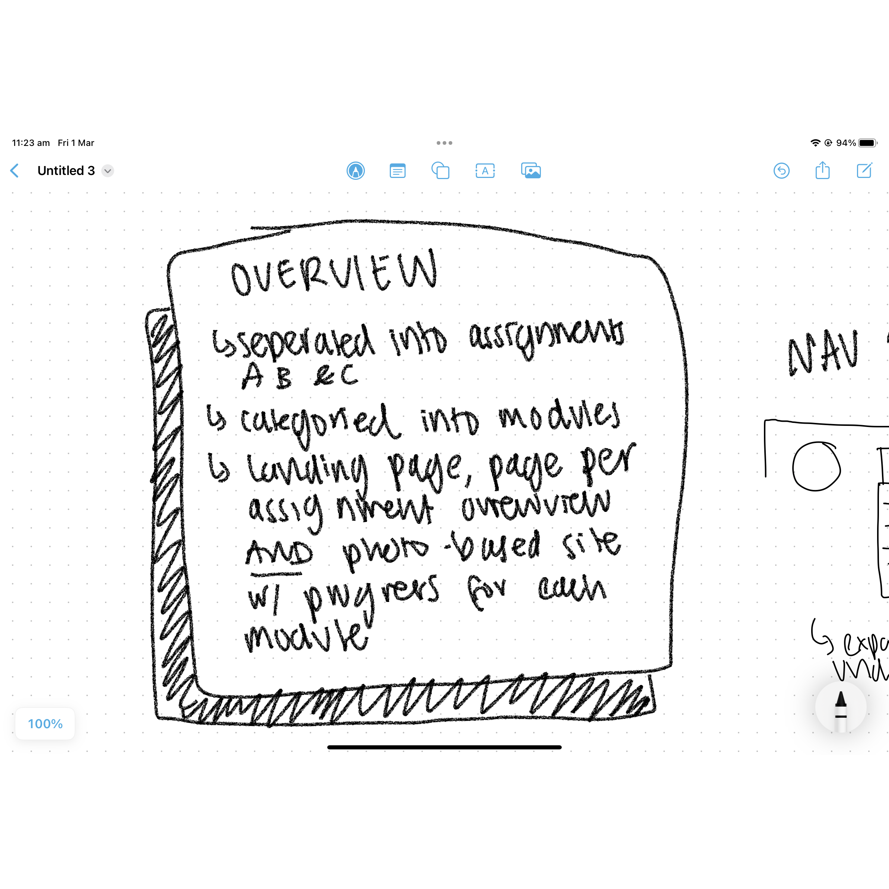
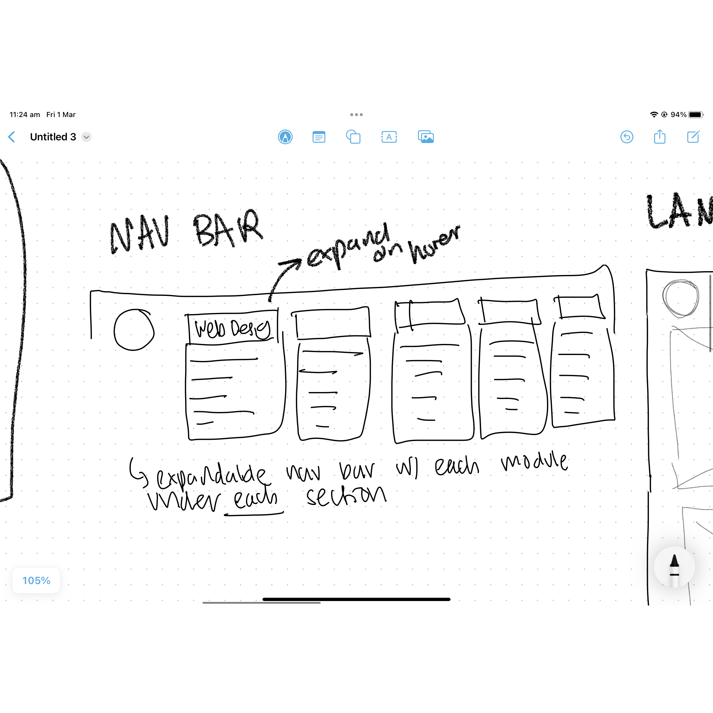
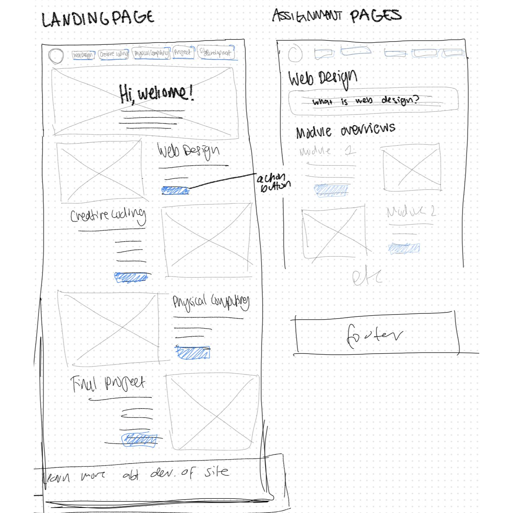
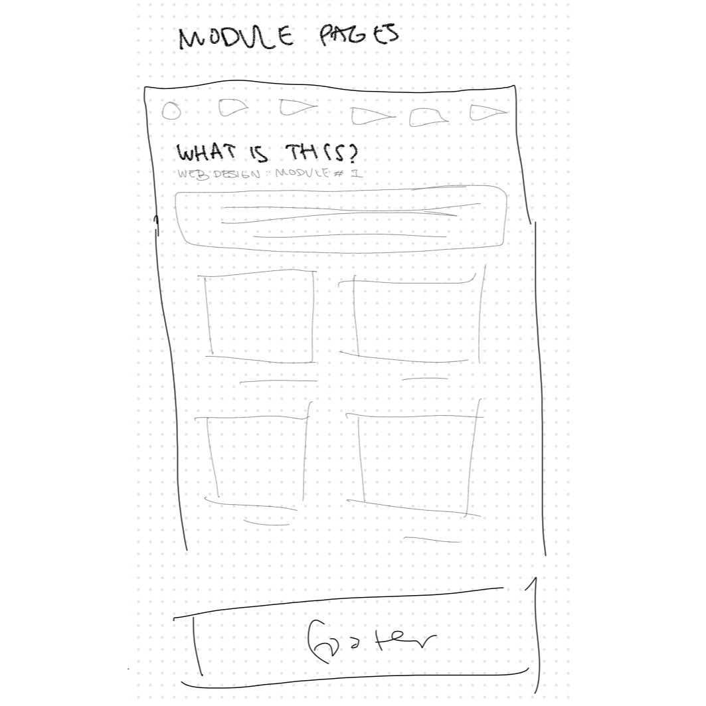

Brainstorming
I started the process of this assignment by writing an overview for myself, of the content I needed to include.
This helps me map out my requirements to build a structure around.

Initial Wireframes: Nav Bar
At the very start of brainstorming how to layout content, I decided to start with the simplest, and clearest
format I could picture. Something clear, that I could then add theming or other visuals on top of.

Initial Wireframes: Landing Page
This was a continuation of my initial brainstorming of the both structured layout. Though the idea transformed
to be more creative, this was helpful to lay out how all the information connects.

Initial Wireframes: Module Pages
The final page of my intital, structured wireframing was the module page. I wanted a layout that was image based, and this
eventually turned into my current layout, but I added a more varied balance of content on the page.

First Coding: Nav Bar Image
My next steps that I took were to create a really simple website with linked pages, and a loose underlying informationa architecture to
help navigation.

First Coding: Nav bar Code
This image is a screenshot of the inital code I used to set up a basic navigation system. This was inspired by open source
code from a few different sources, and was really just intended to connect links in a clean way so I could develop the rest of the site
with clarity.

Starting on Module Page
When I code a new website and am working on the underlying structured, such as divs, I like to use solid background colours with
high contrast so I can visualise the areas I am manipulating.

Populating Modules with Content
I used flex boxes to create the images, titles and description layout cards. I created tags of left, right and centre so
I could easily change where the images showed in realtion to the page.

Creating custom handwriting font
After creating the general structure of the module pages, I began basic styling. It was important to me that
my 'sketchbook' felt like mine, and felt loose and organic, so I opted to create my own font with my real handwriting.
I used a program called calligraphr and wrote on my ipad, then converted it to a ttf file, and linked it to my website.

Stylised Pages
I used my font, as well as a seamless paper background texture. At this point I was still using
my original navigation system, but this didnt feel interesting or organic enough. I landed on my final sketchbook idea,
as shown in the module pages, and progressed to add this styling.

Stylised Module Page
The content page is structured, but the font and sketch style of images makes it feel like a sketchbook. My next steps for these would
be to add visual elements to add interest, as well as maybe more interactions.

Stylised Content Page
The intial navigation system I want to feel really random and sketchy. I wanted this more interactive so I added another feature, in the next photo.

Drawing on Background
I played a game from 'Pointless Website' called One Line Drawing, where you drew with one line then it dissapeared.
I wanted to fit this into my sketchbook idea and make it more interactive so I created a canvas and added JavaScript functions I sourced online. It lets you
draw on a canvas in the background of the contents page, at a z-1 index, and then dissapears after a few seconds.

Github Branch Issue
I encountered a small issue with Github while trying to test that the website could go live. I think I had accidentally created a
second branch and my updates were no longer syncing properly, but could not push,pull or update anything. After investigating this in the terminal
I worked through it and fixed the merge conflicts, but sometimes my CSS is still not as reliable on the Github version as it is on LiveServer.
Brainstorming
I started the process of this assignment by writing an overview for myself, of the content I needed to include. This helps me map out my requirements to build a structure around.
Initial Wireframes: Nav Bar
At the very start of brainstorming how to layout content, I decided to start with the simplest, and clearest format I could picture. Something clear, that I could then add theming or other visuals on top of.
Initial Wireframes: Landing Page
This was a continuation of my initial brainstorming of the both structured layout. Though the idea transformed to be more creative, this was helpful to lay out how all the information connects.
Initial Wireframes: Module Pages
The final page of my intital, structured wireframing was the module page. I wanted a layout that was image based, and this eventually turned into my current layout, but I added a more varied balance of content on the page.
First Coding: Nav Bar Image
My next steps that I took were to create a really simple website with linked pages, and a loose underlying informationa architecture to help navigation.
First Coding: Nav bar Code
This image is a screenshot of the inital code I used to set up a basic navigation system. This was inspired by open source code from a few different sources, and was really just intended to connect links in a clean way so I could develop the rest of the site with clarity.
Starting on Module Page
When I code a new website and am working on the underlying structured, such as divs, I like to use solid background colours with high contrast so I can visualise the areas I am manipulating.
Populating Modules with Content
I used flex boxes to create the images, titles and description layout cards. I created tags of left, right and centre so I could easily change where the images showed in realtion to the page.
Creating custom handwriting font
After creating the general structure of the module pages, I began basic styling. It was important to me that my 'sketchbook' felt like mine, and felt loose and organic, so I opted to create my own font with my real handwriting. I used a program called calligraphr and wrote on my ipad, then converted it to a ttf file, and linked it to my website.
Stylised Pages
I used my font, as well as a seamless paper background texture. At this point I was still using my original navigation system, but this didnt feel interesting or organic enough. I landed on my final sketchbook idea, as shown in the module pages, and progressed to add this styling.
Stylised Module Page
The content page is structured, but the font and sketch style of images makes it feel like a sketchbook. My next steps for these would be to add visual elements to add interest, as well as maybe more interactions.
Stylised Content Page
The intial navigation system I want to feel really random and sketchy. I wanted this more interactive so I added another feature, in the next photo.
Drawing on Background
I played a game from 'Pointless Website' called One Line Drawing, where you drew with one line then it dissapeared. I wanted to fit this into my sketchbook idea and make it more interactive so I created a canvas and added JavaScript functions I sourced online. It lets you draw on a canvas in the background of the contents page, at a z-1 index, and then dissapears after a few seconds.
Github Branch Issue
I encountered a small issue with Github while trying to test that the website could go live. I think I had accidentally created a second branch and my updates were no longer syncing properly, but could not push,pull or update anything. After investigating this in the terminal I worked through it and fixed the merge conflicts, but sometimes my CSS is still not as reliable on the Github version as it is on LiveServer.